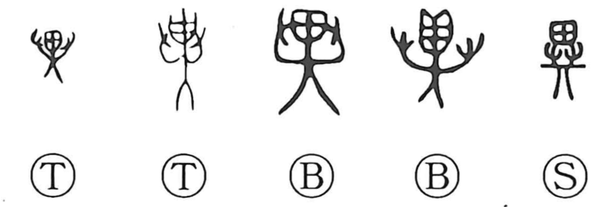

異

Kun: koto, kotonaru, ayashimu | On: i
different ・ strange ・ unusual
Explanation
In its ancient form, this character depicts a demon or spirit seen from the front, both arms raised in a fearsome display. The square element 田 marks the head of the spirit. It contrasts with 畏, which shows the same numinous figure in profile, grasping a staff; 異 is the frontal, confrontational view. From this image of a mysteriously powerful being assuming a terrifying guise, the graph came to signify what is extraordinary and out of the ordinary, hence “different,” and by extension “surpassing,” and even “to suspect” or “find strange.” The related character 冀, “to long for,” portrays an 異-figure whose head bears horn-like adornments.